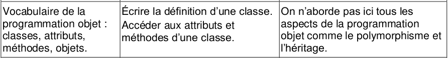

Programmation orientée objet⚓︎

abrégée par POO en français, OOP en anglais (ne pas confondre)

0. Introduction⚓︎
La POO est un paradigme de programmation, au même titre que la programmation impérative (que nous pratiquons déjà) ou la programmation fonctionnelle (qui sera étudiée cette année en Terminale), ou encore d'autres paradigmes (la liste est longue).
Un paradigme de programmation pourrait se définir comme une philosophie dans la manière de programmer : c'est un parti-pris revendiqué dans la manière d'aborder le problème à résoudre. Une fois cette décision prise, des outils spécifiques au paradigme choisi sont utilisés.
Métaphore
Imaginons 3 menuisiers qui ont pour mission de fabriquer chacun un meuble.
- Le premier pourra décider d'utiliser du collé-pointé : il assemblera les morceaux de bois en les collant puis utilisera des pointes. Ses outils seront le marteau et le pistolet à colle.
- Le deuxième pourra décider de visser les morceaux de bois entre eux : son outil principal sera une visseuse.
- Le troisième pourra décider de faire de l'assemblage par tenons et mortaises : son outil principal sera une défonceuse.
Pour la réalisation de sa mission, chaque menuisier utilise un paradigme différent.
Qui utilise la meilleure méthode ? Cette question n'a pas vraiment de réponse : certaines méthodes sont plus rapides que d'autres, d'autres plus robustes, d'autres plus esthétiques...
Et pourquoi ne pas mélanger les paradigmes ? Rien n'interdit d'utiliser des pointes ET des vis dans la fabrication d'un meuble.
La Programmation Orientée Objet sera (surtout à notre niveau) mélangée avec de la programmation impérative, de la programmation fonctionnelle... d'ailleurs vous avez déjà manipulé des objets sans le savoir :
1. Des objets déjà autour de nous⚓︎
>>> m = [4,5,2]
>>> type(m)
list
m est une liste, ou plus précisément un objet de type list. Et en tant qu'objet de type list, il est possible de lui appliquer certaines fonctions prédéfinies (qu'on appelera méthodes) :
>>> m.reverse()
La syntaxe utilisée (le . après le nom de l'objet) est spécifique à la POO. Chaque fois que vous voyez cela, c'est que vous êtes en train de manipuler des objets.
Mais qu'a donc fait cette méthode reverse() ?
>>> m
[2, 5, 4]
Nous ne sommes pas surpris par ce résultat car la personne qui a programmé la méthode reverse() lui a donné un nom explicite.
Comment a-t-elle programmé cette inversion des valeurs de la liste ? Nous n'en savons rien et cela ne nous intéresse pas. Nous sommes juste utilisateurs de cette méthode.
L'objet de type list nous a été livré avec sa méthode reverse() (et bien d'autres choses) et nous n'avons pas à démonter la boîte pour en observer les engrenages : on parle de principe d'encapsulation.
On peut obtenir la liste de toutes les fonctions disponibles pour un objet de type list, par la fonction dir :
>>> dir(m)
['__add__',
'__class__',
'__contains__',
'__delattr__',
...
'clear',
'copy',
'count',
'extend',
'index',
'insert',
'pop',
'remove',
'reverse',
'sort']
Les méthodes encadrées par un double underscore __ sont des méthodes privées, a priori non destinées à l'utilisateur. Les méthodes publiques, utilisables pour chaque objet de type list, sont donc append, clear, ...
Comment savoir ce que font les méthodes ? Si elles ont été correctement codées (et elles l'ont été), elles possèdent une docstring, accessible par :
>>> m.append.__doc__
'Append object to the end of the list.'
>>> m.reverse.__doc__
'Reverse *IN PLACE*.'
2. Créer son propre objet sa propre classe⚓︎
2.1 Vocabulaire : classe, objet, instance de classe⚓︎
Jusqu'ici nous avons employé uniquement le mot «objet». Il convient maintenant d'être plus précis.
- On désignera par classe la structure de données définissant une catégorie générique d'objets. Dans le monde animal, chat est une classe (nommée en réalité félidé ).
- Chaque élement de la classe chat va se distinguer par des caractéristiques : un âge, une couleur de pelage, un surnom... (on appelera ces caractéristiques des attributs) et des fonctionnalités, comme la méthode
attrape_souris(). - Lorsqu'on désigne un chat en particulier, on désigne alors un objet (bien réel) qui est une instance de la classe (abstraite) chat.
Par exemple, l'objet Larry est une instance de la classe chat .

D'après Wikipedia,
larry.pelage = "blanc et tabby"
larry.surnom = "Chief Mouser to the Cabinet Office"
Toujours d'après Wikipedia, la méthode larry.attrape_souris() est plutôt efficace.
2.2 Création d'une classe⚓︎
2.2.1 (mauvaise) manière minimale⚓︎
Créons une classe «voiture». Il suffit d'écrire :
class Voiture :
pass #pass, car pour l'instant il n'y a rien dans la déclaration de la classe (et c'est mal)
La classe Voiture est créée.
Notez que par convention, le nom d'une classe commence toujours par une majuscule.
Pour créer une instance de cette classe, on écrit :
>>> titine = Voiture()
titine est un objet, instance de la classe Voiture.
>>> type(titine)
__main__.Voiture
On peut alors donner des attributs à cette instance :
>>> titine.annee = 2018
>>> titine.couleur = "verte"
>>> titine.vitesse_max = 162
Mais arrêtons-là cette mauvaise méthode. Si on désire créer une classe «voiture», c'est pour créer un concept générique de voiture et d'en spécifier des caractéristiques communes : l'année, la couleur, la vitesse maximale...
L'idée est donc qu'à la création (on dira plutôt à la construction) de chaque objet voiture, on va lui spécifier directement ses attributs :
2.2.2 (bonne) manière : la méthode constructeur  ⚓︎
⚓︎
La méthode constructeur, toujours appelée __init__(), est une méthode (une «def») qui sera automatiquement appelée à la création de l'objet. Elle va donc le doter de tous les attributs de sa classe.
1 2 3 4 5 6 | |
- le mot-clé
self, omniprésent en POO (d'autres langages utilisentthis), fait référence à l'objet lui-même, qui est en train d'être construit. - pour construire l'objet, 3 paramètres seront nécessaires :
annee,couletvmax. Ils donneront respectivement leur valeur aux attributsannee,couleuretvitesse_max. - dans cet exemple, les noms
couletvmaxont été utilisés pour abrégercouleuretvitesse_max, mais il est recommandé de garder les mêmes noms, même si ce n'est pas du tout obligatoire.
Construisons donc notre première voiture !
>>> mon_bolide = Voiture(2012, "rouge", 190)
>>> type(mon_bolide)
__main__.Voiture
mon_bolide possède 4 attributs :
annee,couleuretvitesse_maxont été donnés par l'utilisateur lors de la création.ages'est créé «tout seul» par l'instructionself.age = 2021 - self.annee.
>>> mon_bolide.annee
2012
>>> mon_bolide.couleur
'rouge'
>>> mon_bolide.vitesse_max
190
>>> mon_bolide.age
11
Observons les différentes étapes grâce à PythonTutor :
Bien sûr, on peut créer une autre voiture en suivant le même principe :
>>> batmobile = Voiture(2036, "noire", 325)
>>> batmobile.couleur
'noire'
Exercice 1
Créer une classe Point permettant de créer un objet A , dont on récupèrera l'abscisse par la variable A.x et l'ordonnée par A.y.
Exemple d'utilisation de la classe
>>> A = Point(3,5)
>>> A.x
3
>>> A.y
5
1 2 3 4 | |
2.2.4 Créer une méthode pour notre objet⚓︎
1 2 3 4 5 6 7 8 9 10 | |
Remarque : le symbole \ est utilisé ici pour couper une ligne trop longue.
>>> batmobile = Voiture(2036, "noire", 325)
>>> batmobile.petite_annonce()
À vendre voiture noire de 2036 , vitesse maximale 325 km/h.
Nous aurions pu (ou dû) en profiter pour écrire une docstring pour notre méthode petite_annonce() :
class Voiture :
def __init__(self, annee, coul, vmax) :
self.annee = annee
self.couleur = coul
self.vitesse_max = vmax
self.age = 2023 - self.annee
def petite_annonce(self) :
""" Rédige automatiquement une petite annonce concernant le véhicule"""
print("À vendre voiture", self.couleur, "de", self.annee,\
", vitesse maximale", self.vitesse_max, "km/h.")
>>> batmobile = Voiture(2036, "noire", 325)
>>> batmobile.petite_annonce.__doc__
' Rédige automatiquement une petite annonce concernant le véhicule'
Que donne la commande dir pour notre objet ?
dir(batmobile)
['__class__',
'__delattr__',
'__dict__',
'__dir__',
'__doc__',
'__eq__',
'__format__',
'__ge__',
'__getattribute__',
'__gt__',
'__hash__',
'__init__',
'__init_subclass__',
'__le__',
'__lt__',
'__module__',
'__ne__',
'__new__',
'__reduce__',
'__reduce_ex__',
'__repr__',
'__setattr__',
'__sizeof__',
'__str__',
'__subclasshook__',
'__weakref__',
'age',
'annee',
'couleur',
'petite_annonce',
'vitesse_max']
On y retrouve donc à la fois les 4 attributs et l'unique méthode que nous avons créés pour notre objet.
Exercice 2
Reprendre la classe de l'exercice précédent et rajouter une méthode distance() qui renvoie la distance du point par rapport à l'origine du repère (dans un repère orthonormé).
Exemple d'utilisation de la classe
>>> A = Point(3,5)
>>> A.distance()
5.830951894845301
1 2 3 4 5 6 7 | |
3. Compléments⚓︎
3.1 Hors-Programme : la méthode __repr__()⚓︎
La méthode __repr__() (les doubles underscores traduisent le fait que la méthode est privée) peut redéfinir la manière dont l'objet doit s'afficher lors qu'on le passe en paramètre à la fonction print(), ou simplement lorsqu'on demande sa valeur en console.
Observons comment s'affiche un objet de type Fraction lorsque rien n'a été spécifié sur son affichage.
1 2 3 4 | |
>>> a = Fraction(3,4)
>>> print(a)
<__main__.Fraction object at 0x7f470445c828>
C'est un peu décevant. Rajoutons donc une méthode __repr__() .
1 2 3 4 5 6 7 | |
>>> a = Fraction(3,4)
>>> print(a)
3/4
>>> a
3/4
Exercice 3
Modifier la méthode __repr__ afin de n'afficher que le numérateur dans le cas où le dénominateur vaut 1.
1 2 3 4 5 6 7 8 9 | |
3.2 L'encapsulation poussée à bout : les getters et les setters⚓︎
Imaginons la classe suivante :
1 2 3 4 5 | |
Instancions le joueur Nans Ducuing
>>> nducuing = Joueur("Nans DUCUING", "UBB", 31)

notre cobaye
3.2.1 Les setters⚓︎
Supposons maintenant que ce joueur change de club, pour aller de l'UBB à Perpignan.
Il serait naturel de faire ceci :
>>> nducuing.club = "Perpignan"
Cela marche bien, mais... C'est contraire à l'esprit de la Programmation Orientée Objet. Ce paradigme milite pour une encapsulation des objets, qui interdisent le plus possible l'accès direct à leurs attributs.
Comment faire alors ? En proposant une méthode dont l'unique travail est d'aller effectuer une modification sur l'attribut :
1 2 3 4 5 6 7 8 | |
Le changement de club se fera maintenant par l'appel :
>>> nducuing.mutation("Perpignan")
Ce type de méthode s'appelle un setter.
3.2.2 Les getters⚓︎
Nous avons vu qu'aller modifier directement un attribut était défendu... mais peut-on simplement aller le consulter ?
Là encore, le concept d'encapsulation -poussé à l'extrême- peut nous l'interdire.
Mais si
nducuing.club est interdit, comment savoir dans quel club joue notre joueur préféré ?
Une fois de plus, en construisant une méthode qui va nous renvoyer l'état actuel de son attribut club :
class Joueur :
def __init__(self, nom, club, age):
self.nom = nom
self.club = club
self.age = age
def mutation(self, nouveau_club):
self.club = nouveau_club
def get_club(self):
return self.club
L'accès à l'attribut club de notre instance se fera donc maintenant par :
>>> nducuing.get_club()
Ce type de méthode s'appelle un getter.
Sources et bibliographie
- Numérique et Sciences Informatiques, Terminale, T. BALABONSKI, S. CONCHON, J.-C. FILLIATRE, K. NGUYEN, éditions ELLIPSES.